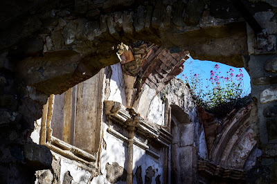
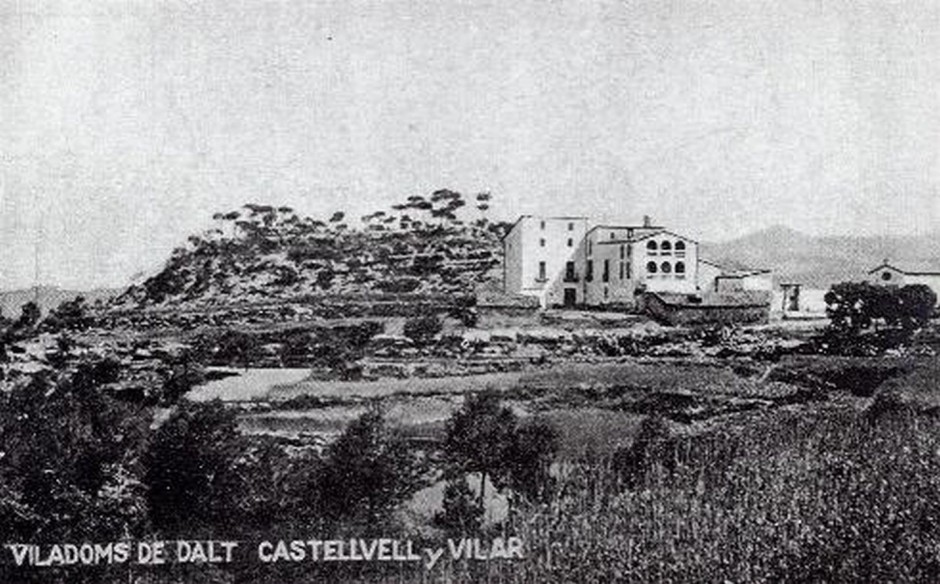
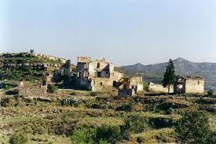
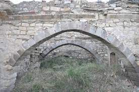

Mas ubicat a l'est del terme municipal, en una elevació important que li permet dominar visualment una bona extensió. Tant per la banda de Castellbell i el Vilar fins a Montserrat com de Rellinars. El seu estat és ruïnós, sobretot després dels espolis que ha patit al llarg dels darrers anys. Malgrat tot, encara s'entreveu la potència del mas. En resten els murs que delimiten la planta.
Es conserven una sèrie d'estructures i parts arquitectòniques en mal estat; com l'arrencada del brancal esquerra d'una portalada de pedra i dues arcades també de pedra que formaven part del celler. També la cisterna per a la recollida d'aigües pluvials. Entre el mur superior de la cisterna i arran de la paret del celler, mig colgades, hi ha tres tines, dues de rodones i una de quadrada. Les boixes donen cap al celler, però no són visibles degut a l'enderroc dels murs.
S'observen altres dependències pròpies d'un mas d'aquestes dimensions, com les corts, i un indret on segons informació oral hi havia el trull per l'oli.
A mà dreta, al costat d'un xiprer, hi ha la capella dedicada a Nostra Senyora de Montserrat. No conserva la coberta i el seu estat de conservació és molt dolent. Encara s'hi observen restes de pintures en les fornícules dels murs laterals.

Foto antiga de Viladoms



Videos en 360º de Viladoms de Dalt
Imatge 360 de Viladoms de Dalt
Ubicació de Viladoms de Dalt
Agraïments
Aquesta informació ha estat recopilada a partir de les següents fonts: